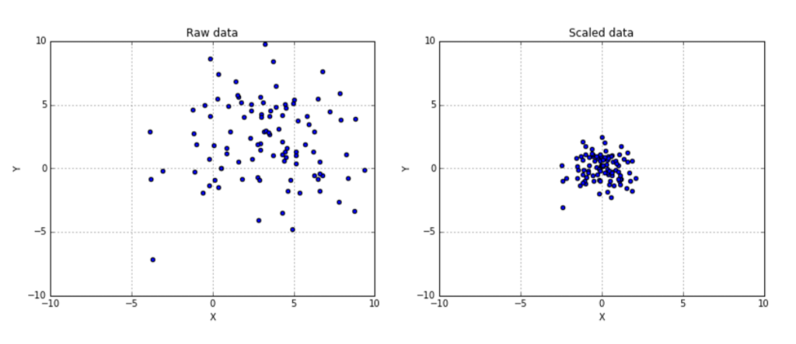
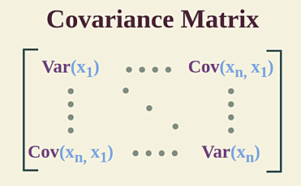

Principal Component Analysis (PCA)
Principal Component Analysis (PCA) is an unsupervised statistical dimensionality reduction technique used to transform a dataset into a lower-dimensional space while preserving as much variance (information) as possible.
Why Do We Need PCA? (The Curse of Dimensionality)
- As the number of features (dimensions) in a dataset increases, it introduces several problems:
- ✅ Computational Complexity: More dimensions mean more computations and storage requirements.
- ✅ Data Sparsity: High-dimensional data points become spread out, making patterns difficult to detect.
- ✅ Overfitting: Machine learning models may learn noise instead of actual patterns.
- ✅ Visualization Challenges: Humans can only interpret data in 2D or 3D, making it difficult to understand high-dimensional datasets.
PCA helps mitigate these issues by reducing the number of features while keeping the most important information.
How Does PCA Work?
PCA follows a mathematical approach based on linear algebra to reduce dimensions. Here’s a step-by-step breakdown:
- Step 1: Standardize the Data
- X is the original feature matrix.
- μ is the mean of each feature.
- σ is the standard deviation of each feature.
- Step 2: Compute the Covariance Matrix
- X is the standardized data matrix.
- n is the number of observations.
- Step 3: Compute Eigenvalues and Eigenvectors
- Eigenvalues represent the directions of the new feature space.
- Eigenvectors represent the amount of variance retained in each direction.
- v: Eigenvectors (principal components).
- λ: Eigenvalues (amount of variance explained by each component).
- Step 4: Sort and Select Top Principal Components
- Sort the eigenvalues indescending order .
- Select the top 𝑘 components that capture most of the variance.
- Step 5: Transform the Data
- Vk is the matrix of top 𝑘 eigenvectors .
- Xnew is the transformed lower-dimensional dataset.
Before applying PCA, we need to standardize (normalize) the data because PCA is affected by feature scale. We subtract the mean and divide by the standard deviation:
\( X_{\text{Normalized}} = \frac{X - \mu}{\sigma} \)
where:
The covariance matrix captures relationships between features.
If two features are correlated, PCA will try to merge them into a single new feature.
The covariance matrix (𝐶) is computed as:
\( C = \frac{1}{n-1} X^T X \)
where:The covariance matrix is symmetric, with diagonal elements representing the variance of each feature.

Eigenvalues and eigenvectors help identify the principal components, which are new axes along which data variation is maximized.
Solving this equation :
\( C v = \lambda v \)
where:
The percentage of variance captured by each component is:
\[ \text{Explained Variance Ratio} = \frac{\lambda_i}{\sum \lambda} \]
where λi is the eigenvalue of the i-th principal component.If we plot the explained variance, we often see an "elbow" shape, where most variance is captured by a few components. We typically select the number of components based on this elbow.
We multiply the original standardized data matrix by the selected principal components:
\[ X_{\text{New}} = X_{\text{Normalized}} V_k \]
Now, instead of having 𝑑 original features, We have 𝑘 principal components.
PCA Applications
PCA is widely used in various fields:
✅ Data Visualization
- ✨ Reducing high-dimensional data (e.g., 100 features) into 2D or 3D for visualization.
- ✨ Example: Visualizing the MNIST handwritten digits dataset in 2D.
✅ Machine Learning & Feature Engineering
- ✨ Helps improve model performance by removing redundant or less important features.
- ✨ Reduces overfitting by lowering the number of input features.
✅ Image Compression
- ✨ Images with millions of pixels can be reduced to fewer principal components without significant loss in quality.
- ✨ Example: Face recognition systems like Eigenfaces use PCA to reduce storage and computation.
✅ Noise Reduction
- ✨ PCA removes noise by discarding components with low variance, effectively filtering out unimportant information.
✅ Outlier Detection
- ✨ Identifies unusual data points by showing which ones deviate significantly in the reduced space.
Key Limitations of PCA
- 🚨 Linear Transformation Only: PCA assumes linear relationships between features. It won’t work well if the data is inherently nonlinear.
- 🚨 Loss of Interpretability: The transformed features (principal components) do not have direct meanings.
- 🚨 Sensitive to Scaling: PCA assumes data is centered, so it requires proper standardization.
- 🚨 Doesn't Work Well for Categorical Data: PCA is best suited for continuous numerical data.
To handle nonlinear relationships, techniques like Kernel PCA and t-SNE can be used.
When Should You Use PCA?
- ✅ When you have high-dimensional data and need to reduce computational cost.
- ✅ When features are correlated, and you want to remove redundancy.
- ✅ When you need to visualize data in 2D or 3D.
- ✅ When performing data preprocessing before machine learning models.
PCA vs. Other Dimensionality Reduction Techniques
| Technique | Assumption | Strengths | Limitations |
|---|---|---|---|
| PCA | Linear relationships | Fast, widely used | Fails for nonlinear data |
| Kernel PCA | Nonlinear relationships | Captures complex patterns | Computationally expensive |
| t-SNE | Manifold learning | Good for visualization | Not suitable for feature extraction |
| Autoencoders | Deep learning-based | Learns complex structures | Needs large d |
PCA and Singular Value Decomposition (SVD)
PCA can also be computed using Singular Value Decomposition (SVD), which is more efficient than eigenvalue decomposition.
\( X = U \Sigma V^T \)
- Left singular vectors (U) → Principal components
- Singular values (Σ) → Corresponds to variance
- Right singular vectors (V) → Feature transformation
In practice, SVD is preferred for large datasets.
PCA in Python (Using Scikit-Learn)
import numpy as np
import matplotlib.pyplot as plt
from sklearn.decomposition import PCA
from sklearn.preprocessing import StandardScaler
from sklearn.datasets import load_iris
# Load dataset
data = load_iris()
X = data.data
# Standardize the data
scaler = StandardScaler()
X_scaled = scaler.fit_transform(X)
# Apply PCA
pca = PCA(n_components=2)
X_pca = pca.fit_transform(X_scaled)
# Plot PCA results
plt.scatter(X_pca[:, 0], X_pca[:, 1], c=data.target, cmap='viridis', edgecolor='k')
plt.xlabel('Principal Component 1')
plt.ylabel('Principal Component 2')
plt.title('PCA Visualization of Iris Dataset')
plt.colorbar(label='Class')
plt.show()

1. Importing Necessary Libraries
import numpy as np
import matplotlib.pyplot as plt
from sklearn.decomposition import PCA
from sklearn.preprocessing import StandardScaler
from sklearn.datasets import load_iris
- numpy: Used for numerical operations.
- matplotlib.pyplot: Used for plotting.
- sklearn.decomposition.PCA: Implements PCA.
- sklearn.preprocessing.StandardScaler: Standardizes the dataset.
- sklearn.datasets.load_iris: Loads the Iris dataset.
2. Loading the Iris Dataset
data = load_iris()
X = data.data
The Iris dataset contains 150 samples with 4 features:
- Sepal Length
- Sepal Width
- Petal Length
- Petal Width
3. Standardizing the Data
scaler = StandardScaler()
X_scaled = scaler.fit_transform(X)
PCA is sensitive to feature scaling, so we normalize the data using:
\( X_{\text{Normalized}} = \frac{X - \mu}{\sigma} \)
4. Applying PCA
pca = PCA(n_components=2)
X_pca = pca.fit_transform(X_scaled)
This reduces the dataset from 4 dimensions to 2 principal components.